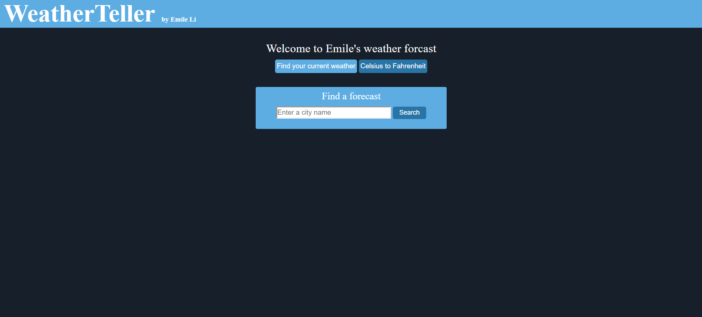
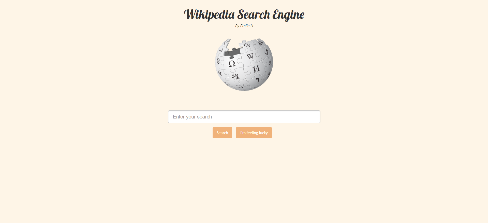
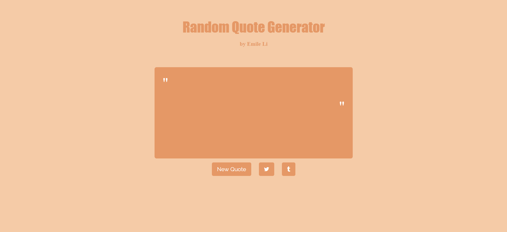
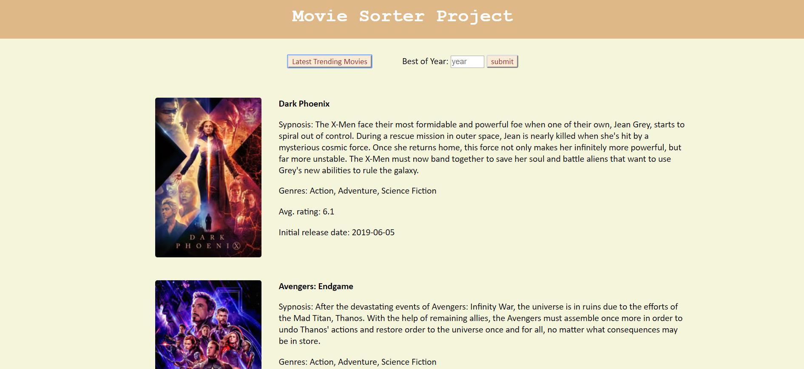

PROJECTS
Below are my projects which i built using HTML, CSS and Javascript. I am currently learning new web development tools such as MongoDB, Express.js, AngularJS and Node.js.
WeatherTeller
 In this project, i used the openweathermap api to fetch data in json format and used different informations available such as weather, location and so on.
Wikipedia Search Engine
 In this project, i used the wikipedia api to get data about the different wikipedia results obtained on an item that a user would have actually searched on wikipedia. I limit the results to 10 results in this project just to get an idea.
Random Quote Generator
 In this project, i used the forismatic api to generate a quote each time i make a jquery call. The api used has a database of famous quotes invented by well-known people throughout history.
Movie Sorter Project
 In this project, i used the themoviedb api to get data about the latest trending movies. In addition, i added the feature of getting the most popular movies within a particular year. I extracted the relevant info in json format before displaying it on the website.